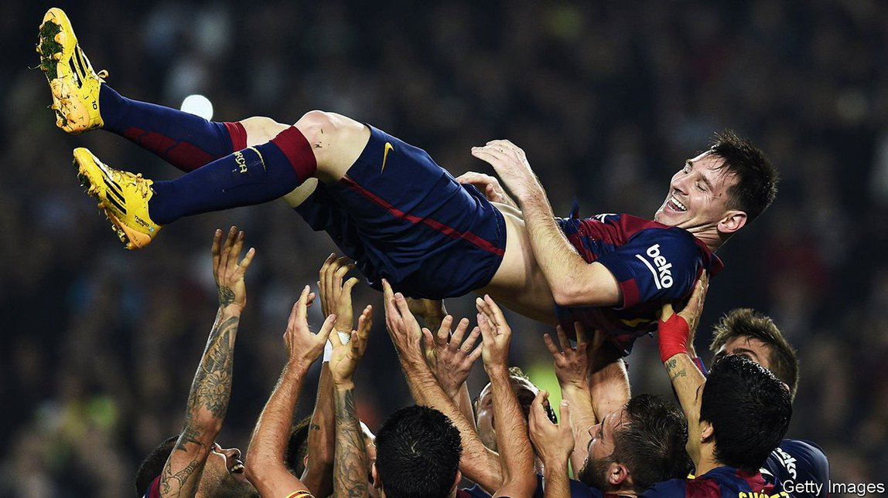

2021-09-01T03:41:44+00:00
体育
费德勒、梅西，以及对伟大的追求
两本新书审视两位运动员非凡的运动生涯，找到了诸多共性【《巴塞罗那帝国》、《大师》书评】

身居有史以来最具风范、最成功的运动员之列，费德勒和梅西自然会被放在一起比较。费德勒已经赢得了20个男子单打冠军头衔，与纳达尔和德约科维奇的记录持平；他还是闯进大满贯决赛次数最多的男子选手。梅西在巴塞罗那赢得了34座奖杯，六次获得金球奖这一对世界最佳足球运动员的表彰。费德勒称赞这位阿根廷前锋的能力时说：“他的面前总有三种选择。他是少数有这种本领的人之一。”许多权威人士在评价他的网球技艺时的表述也差不多。
近年来，这两位体育巨星变得愈发相似。费德勒在35岁后赢得了三项大赛冠军；现年34岁的梅西也刚刚赢得一项世界大赛冠军，此前他一直未能获得这项荣誉。以前人们一度认为体育是唯一一个在30岁之后注定要走下坡路的职业。费德勒和梅西都证明了这不再是铁律。
因此，关于这两位运动员的两本书籍在同一时间出版真是再合适不过了。在《巴塞罗那帝国》（The Barcelona Complex）一书中，《金融时报》记者西蒙·库珀（Simon Kuper）分析了这家以梅西为“引擎和旗手”的西班牙足球俱乐部何以称雄。《纽约时报》记者克里斯托弗·克莱雷（Christopher Clarey）所著的《大师》（The Master）则是一部更传统的传记，素材来自对费德勒和他生活圈子的采访。两本书都就如何取得伟大的体育成就提供了宝贵的见解。
现代运动员比他们的前辈更自律。以前的运动员经常过着摇滚巨星一般的生活，认定自己在中年以前身体就消耗得差不多了。上世纪70年代初，另一位巴塞罗那足球传奇人物约翰·克鲁伊夫就是个老烟枪。他在阿贾克斯效力时身体状况已经很差，队友们做跑步训练时他会躲在树林里，等他们跑到最后一圈再混进队伍。相比之下，梅西将自己职业生涯的延长归功于以素食为主的饮食。他也受益于俱乐部对营养学、睡眠和心理学的重视。
迄今为止，在费德勒团队中任职最久的是皮埃尔·帕格尼尼（Pierre Paganini），他曾是一名十项全能运动员，自2000年起担任费德勒的体能教练。“毫无疑问，我能有今天的成就，很大程度上是靠皮埃尔。”费德勒说过。现代网球运动员需要“爆发性耐力”——既有短跑运动员的加速爆发力，又有马拉松运动员的耐力。帕格尼尼最喜欢的训练是让费德勒将一个沉重的健身实心球举过头顶，在四个有编号的柱子之间来回冲刺。
在很多方面，巴塞罗那近年的故事就是梅西的个人传奇。在从球员签约到球队战术的各种事情上，巴塞罗那“把俱乐部的钥匙交给了梅西”，库珀写道。俱乐部前主席桑德罗·罗塞尔（Sandro Rosell）说：“如果你有可能在每场比赛都是全场最佳，那你多少得有点独裁，梅西就是这样。”
很多年里，这种做法十分奏效。从2006年到2015年，巴塞罗那在球场上的表现光彩夺目，四次捧回欧冠冠军（在此之前他们只赢过一次）。然而此后几年的场上表现略显逊色，而总体债务迅速膨胀，今年已超过10亿欧元（12亿美元）。尽管梅西仍然表现杰出，但他可能要为此承担部分责任。据报道，他在2017年到2021年四个赛季的合同薪资总额高达6.74亿美元，这一天价薪资耗尽了俱乐部的资金，也导致队友要求涨薪，结果导致俱乐部缺少资金签入新球员。同时对手也在模仿巴塞罗那的战术，改进了克鲁伊夫建立起来的细腻传球风格。
《巴塞罗那帝国》和《大师》都强调了顶级运动员之所以出类拔萃，其决策能力功不可没。梅西当然以其芭蕾舞般的运球、精准的传球，以及门前的冷静处理而闻名于世。但库珀指出，所有这些素质背后依靠的是体育科学家所说的“扫视”：环顾四周，就场上情况建立视觉快照。书中一个段落解构了梅西的技艺，让人深受启发，其中写道他每场比赛的大部分时间都在走：在2014年世界杯期间，除守门员外，场上只有一名球员的移动距离比他少。然而，他的前教练瓜迪奥拉注意到，尽管梅西的移动很经济，“他却在不停转头，左、右、左、右。”世界上最好的足球运动员每分钟大概要扫视球场50次。
最杰出的网球运动员也利用视觉线索，比如对手的躯干和臀部的位置，以及他们击球的方式，从而在对手击球之前就推断出可能的回球落点。“速度实在太快了，你必须近乎不假思索地击球。”费德勒解释说。曾指导过费德勒的前瑞士网球运动员马克·罗塞特（Marc Rosset）表示，最优秀的球员“就好像有比别人更多的时间让大脑处理一切信息”。这给人一种毫不费力的印象，实在是绝妙的错觉。
两位作者都不认同梅西或费德勒的胜利是命中注定的说法。克莱雷强调了运气——特别是澳大利亚网球教练彼得·卡特（Peter Carter）决定接受一份在巴塞尔的工作——加上勤奋才使得费德勒的成功故事成为可能。可想而知，梅西的足球才华也完全有可能被埋没：长期以来，这项运动对身高有着教条般的要求，他从阿根廷来到巴塞罗那时俱乐部出资给他提供生长激素，即便如此他也只长到了1.7米的普通身高。假如正如克莱雷所说，费德勒的成功是“一种长期意志力的结果，而非命运使然”，那么梅西的成功同样如此。
2021-09-01T03:41:44+00:00
Sport
Roger Federer, Lionel Messi and the pursuit of greatness
Two new books examine the athletes’ extraordinary careers and find they have much in common
AS TWO OF the most stylish and successful athletes of all time, Roger Federer and Lionel Messi naturally invite comparison. Mr Federer has won 20 men’s singles titles, a record he shares with Rafael Nadal and Novak Djokovic, and reached more Grand Slam finals than any other male player. Mr Messi has won 34 trophies with Barcelona and been awarded the Ballon d’Or, a prize for the world’s best football player, six times. Mr Federer praises the Argentine forward’s abilities in the same language that many pundits use to describe his tennis: “There’s always three options for him. He’s one of the few who’s got that.”
In recent years the similarities between the two sporting stars have deepened. Mr Federer won three of his major titles after turning 35; aged 34, Mr Messi has just won an international tournament—hitherto the one prize to elude him. Sport was once considered the sole career in which, after 30, you were fated to know only professional decline. Mr Federer and Mr Messi are both showing that no longer needs to be the case.
It is fitting, then, that two books about the athletes have been released at the same time. In “The Barcelona Complex” Simon Kuper, a journalist at the Financial Times, analyses how the Spanish football club became a behemoth, with Mr Messi its “engine and standard-bearer”. “The Master” by Christopher Clarey, a journalist at the New York Times, is a more conventional biography, based on interviews with the tennis player and his inner circle. Both books offer valuable insight into how sporting greatness is achieved.
Modern athletes are more disciplined than their forebears, who often lived like rock stars and expected their bodies to give out before they reached middle age. In the early 1970s Johan Cruyff, another Barcelona footballing legend, was a chain-smoker. He was so unfit that, during his time at Ajax, Cruyff would hide in the woods while his teammates did running training, only rejoining them for the last lap. Mr Messi, by contrast, credits a mostly vegetarian diet with prolonging his career and has benefited from his club’s focus on the science of nutrition, sleep and psychology.
By far the longest-serving member of Mr Federer’s team is Pierre Paganini, a former decathlete who has been his fitness coach since 2000. “A big part of the reason that I’m here where I am today is definitely because of Pierre,” Mr Federer has said. Modern tennis players need “explosive endurance”: ie, the acceleration of a sprinter and the stamina of a marathon runner. A favourite drill of Mr Paganini’s is to make Mr Federer sprint between four numbered posts while holding a heavy medicine ball above his head.
The story of Barcelona in recent years is, in many ways, the tale of Mr Messi. In everything from player signings to the team’s tactics, Barcelona “handed Messi the keys to the club”, Mr Kuper writes. Sandro Rosell, the club’s former president, says: “If you have the possibility to be the best player in every match, you have to be a bit of a dictator, as Messi is.”
For many years, it worked. Between 2006 and 2015, Barcelona played dazzling football and won four Champions League titles (they had won only one before in their history). Yet the years since have been of slight on-field decline and huge gross debt, which reached more than €1bn ($1.2bn) this year. While he has remained an extraordinary player, Mr Messi may partly be to blame. His astronomical fee—$674m over four seasons from 2017 to 2021, according to reports—exhausts club funds and leads teammates to demand higher salaries, leaving less cash to sign new players. Rivals have also mimicked Barcelona’s tactics, refining the sophisticated passing style developed by Cruyff.
Both “The Barcelona Complex” and “The Master” emphasise the decision-making that helps set superlative athletes apart. Mr Messi is renowned, rightly, for his balletic dribbling, pinpoint passing and clinical finishing in front of goal. But underpinning all these qualities, Mr Kuper shows, is what sports scientists call “scanning”: looking around to take visual snapshots of play. An illuminating passage deconstructing Mr Messi’s art documents how he spends much of each match walking about—during the World Cup in 2014, only one outfield player covered less ground. Yet though his movement is economical, Mr Messi “is moving his head, right, left, right, left,” as his former coach, Pep Guardiola, observed. The best footballers in the world scan the pitch about 50 times per minute.
The finest tennis players also use visual cues, such as the positions of their opponents’ torso and hips, and the way they go to strike the ball, to deduce where the ball is likely to land even before it is touched. “It happens so fast that you have to hit the shot almost without thinking,” Mr Federer explains. With the best contenders, says Marc Rosset, a former Swiss tennis player who mentored Mr Federer, it is “as if they have more time for their brains to process it all”. The impression of effortlessness that this creates is a brilliant illusion.
Both authors reject the notion that Mr Messi or Mr Federer was fated to prevail. Mr Clarey highlights the fortune—particularly the decision of Peter Carter, an Australian tennis coach, to accept a job in Basel—and hard work that made Mr Federer’s story possible. Mr Messi could also conceivably have been lost to football: the sport long had a dogma about height, and he needed a growth hormone, funded by Barcelona when he moved from Argentina, even to reach a modest 1.7 metres. If Mr Federer’s success “has been a long-running act of will, not destiny”, as Mr Clarey argues, the same is true of Mr Messi’s. ■
2021-09-01T03:41:44+00:00
體育
費德勒、梅西，以及對偉大的追求
兩本新書審視兩位運動員非凡的運動生涯，找到了諸多共性【《巴塞羅那帝國》、《大師》書評】
身居有史以來最具風範、最成功的運動員之列，費德勒和梅西自然會被放在一起比較。費德勒已經贏得了20個男子單打冠軍頭銜，與納達爾和德約科維奇的記錄持平；他還是闖進大滿貫決賽次數最多的男子選手。梅西在巴塞羅那贏得了34座獎盃，六次獲得金球獎這一對世界最佳足球運動員的表彰。費德勒稱讚這位阿根廷前鋒的能力時說：“他的面前總有三種選擇。他是少數有這種本領的人之一。”許多權威人士在評價他的網球技藝時的表述也差不多。
近年來，這兩位體育巨星變得愈發相似。費德勒在35歲後贏得了三項大賽冠軍；現年34歲的梅西也剛剛贏得一項世界大賽冠軍，此前他一直未能獲得這項榮譽。以前人們一度認為體育是唯一一個在30歲之後註定要走下坡路的職業。費德勒和梅西都證明了這不再是鐵律。
因此，關於這兩位運動員的兩本書籍在同一時間出版真是再合適不過了。在《巴塞羅那帝國》（The Barcelona Complex）一書中，《金融時報》記者西蒙·庫珀（Simon Kuper）分析了這家以梅西為“引擎和旗手”的西班牙足球俱樂部何以稱雄。《紐約時報》記者克里斯托弗·克萊雷（Christopher Clarey）所著的《大師》（The Master）則是一部更傳統的傳記，素材來自對費德勒和他生活圈子的採訪。兩本書都就如何取得偉大的體育成就提供了寶貴的見解。
現代運動員比他們的前輩更自律。以前的運動員經常過着搖滾巨星一般的生活，認定自己在中年以前身體就消耗得差不多了。上世紀70年代初，另一位巴塞羅那足球傳奇人物約翰·克魯伊夫就是個老煙槍。他在阿賈克斯效力時身體狀況已經很差，隊友們做跑步訓練時他會躲在樹林里，等他們跑到最後一圈再混進隊伍。相比之下，梅西將自己職業生涯的延長歸功於以素食為主的飲食。他也受益於俱樂部對營養學、睡眠和心理學的重視。
迄今為止，在費德勒團隊中任職最久的是皮埃爾·帕格尼尼（Pierre Paganini），他曾是一名十項全能運動員，自2000年起擔任費德勒的體能教練。“毫無疑問，我能有今天的成就，很大程度上是靠皮埃爾。”費德勒說過。現代網球運動員需要“爆發性耐力”——既有短跑運動員的加速爆發力，又有馬拉松運動員的耐力。帕格尼尼最喜歡的訓練是讓費德勒將一個沉重的健身實心球舉過頭頂，在四個有編號的柱子之間來回衝刺。
在很多方面，巴塞羅那近年的故事就是梅西的個人傳奇。在從球員簽約到球隊戰術的各種事情上，巴塞羅那“把俱樂部的鑰匙交給了梅西”，庫珀寫道。俱樂部前主席桑德羅·羅塞爾（Sandro Rosell）說：“如果你有可能在每場比賽都是全場最佳，那你多少得有點獨裁，梅西就是這樣。”
很多年裡，這種做法十分奏效。從2006年到2015年，巴塞羅那在球場上的表現光彩奪目，四次捧回歐冠冠軍（在此之前他們只贏過一次）。然而此後幾年的場上表現略顯遜色，而總體債務迅速膨脹，今年已超過10億歐元（12億美元）。儘管梅西仍然表現傑出，但他可能要為此承擔部分責任。據報道，他在2017年到2021年四個賽季的合同薪資總額高達6.74億美元，這一天價薪資耗盡了俱樂部的資金，也導致隊友要求漲薪，結果導致俱樂部缺少資金簽入新球員。同時對手也在模仿巴塞羅那的戰術，改進了克魯伊夫建立起來的細膩傳球風格。
《巴塞羅那帝國》和《大師》都強調了頂級運動員之所以出類拔萃，其決策能力功不可沒。梅西當然以其芭蕾舞般的運球、精準的傳球，以及門前的冷靜處理而聞名於世。但庫珀指出，所有這些素質背後依靠的是體育科學家所說的“掃視”：環顧四周，就場上情況建立視覺快照。書中一個段落解構了梅西的技藝，讓人深受啟發，其中寫道他每場比賽的大部分時間都在走：在2014年世界盃期間，除守門員外，場上只有一名球員的移動距離比他少。然而，他的前教練瓜迪奧拉注意到，儘管梅西的移動很經濟，“他卻在不停轉頭，左、右、左、右。”世界上最好的足球運動員每分鐘大概要掃視球場50次。
最傑出的網球運動員也利用視覺線索，比如對手的軀幹和臀部的位置，以及他們擊球的方式，從而在對手擊球之前就推斷出可能的回球落點。“速度實在太快了，你必須近乎不假思索地擊球。”費德勒解釋說。曾指導過費德勒的前瑞士網球運動員馬克·羅塞特（Marc Rosset）表示，最優秀的球員“就好像有比別人更多的時間讓大腦處理一切信息”。這給人一種毫不費力的印象，實在是絕妙的錯覺。
兩位作者都不認同梅西或費德勒的勝利是命中注定的說法。克萊雷強調了運氣——特別是澳大利亞網球教練彼得·卡特（Peter Carter）決定接受一份在巴塞爾的工作——加上勤奮才使得費德勒的成功故事成為可能。可想而知，梅西的足球才華也完全有可能被埋沒：長期以來，這項運動對身高有着教條般的要求，他從阿根廷來到巴塞羅那時俱樂部出資給他提供生長激素，即便如此他也只長到了1.7米的普通身高。假如正如克萊雷所說，費德勒的成功是“一種長期意志力的結果，而非命運使然”，那麼梅西的成功同樣如此。